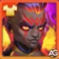

Guia do Tristan - Talismãs, Habilidades e Times | Hero Wars Alliance
- By: Alexandre Domingos. .
Tristan é um daqueles guerreiros da linha de frente que parece simples no início, mas de repente passa a ditar o ritmo de toda a batalha. Ele fortalece aliados físicos, queima Energia e, após aprimorar suas Relíquias Lendárias, aplica Silêncio para punir os conjuradores inimigos antes que eles consigam reagir.
Neste guia do Tristan para Hero Wars Alliance, mostrarei como os talismãs dele mudam seu plano de batalha, por que o Talismã da Bênção costuma ser a escolha mais eficiente e quais habilidades merecem primeiro o investimento em relíquias.


Índice do Guia do Tristan
- Quem é Tristan?
- Avaliação Geral do Tristan
- Prós e Contras do Tristan
- Comparação dos Atributos Máximos dos Talismãs
- Guia dos Talismãs do Tristan
- Prioridade de Evolução das Habilidades de Relíquia Lendária
- Melhor Skin para Tristan
- Prioridade de Evolução dos Artefatos
- Prioridade de Evolução dos Glifos
- Como Combater Tristan
- Sinergia do Tristan
- Melhores Times para Tristan
- Veredito Final do Alexandre
Quem é Tristan em Hero Wars Alliance?
Tristan é um Guerreiro do Caminho da Honra que luta na Linha de Frente. Seu papel é transformar equipes físicas em uma ameaça mais rápida e perigosa, aumentando o Ataque Físico, fornecendo Energia por meio da Vanguarda Abençoada e mirando inimigos que dependem de Penetração Mágica.

- Classe Principal: Guerreiro
- Função: Guerreiro
- Posição: Linha de Frente
- Atributo Principal: Força
- Facção: Caminho da Honra
- Bônus do Reino: Ataque/Defesa da Infantaria 120%
- Habilidades do Reino: Não disponível nos dados atuais.
- Como obter Pedras da Alma: Não informado nos dados atuais.
- Sinergia: Crow, Oya, Fafnir, Yasmine, Artemis
- Tier List da Hidra: Não avaliado nos dados atuais.
O que torna Tristan interessante é o quanto ele recompensa um bom posicionamento. Os aliados à frente dele se beneficiam do Zelo Virtuoso, enquanto seu mecanismo de Energia fica muito mais forte quando o herói certo permanece à sua frente e continua ganhando Energia.
Com as Relíquias Lendárias, Tristan se torna mais do que um suporte de penetração de armadura. Ira do Purificador e Selo da Retribuição aplicam Silêncio, exatamente por isso ele é tão perigoso ao lado de Crow, Oya, Yasmine e equipes de pressão física no estilo de Artemis.
Prós e Contras do Tristan - Hero Wars Alliance
Prós
- Excelente sinergia com equipes físicas que precisam de Penetração de Armadura e ritmo.
- Zelo Virtuoso fortalece Tristan e os aliados à frente dele para criar fortes janelas de dano explosivo.
- Juiz dos Feiticeiros queima Energia e se fortalece conforme a quantidade de heróis aliados do Caminho da Honra.
- As Relíquias Lendárias aplicam Silêncio, tornando-o muito mais forte contra equipes de magos e suportes.
- Entre seus melhores parceiros estão Oya, Crow, Fafnir, Yasmine e Artemis.
Contras
- Precisa da formação de equipe correta, pois vários efeitos dependem dos aliados posicionados à frente dele.
- Seu melhor controle só fica disponível após aprimorar as Relíquias Lendárias.
- Sua autossuficiência é limitada; ele se destaca muito mais como amplificador da equipe.
- Retribuição dos Pecadores é poderosa, mas depende de a Penetração de Armadura realmente superar a Armadura do alvo.
Tristan - Comparação dos Atributos Máximos dos Talismãs
| Atributo | ||
|---|---|---|
 Inteligência Inteligência | 3,944 | 3,944 |
 Agilidade Agilidade | 3,823 | 3,823 |
 Força Força | 17,488 | 15,488 |
 Vida Vida | 1,545,175 | 1,283,675 |
 Ataque Físico Ataque Físico | 114,529 | 125,729 |
 Ataque Mágico Ataque Mágico | 27,258 | 27,258 |
 Armadura Armadura | 37,941.2 | 51,741.2 |
 Defesa Mágica Defesa Mágica | 22,863.8 | 22,863.8 |
 Tenacidade Tenacidade | 782 | 782 |
 Penetração de Armadura Penetração de Armadura | 37,396 | 37,396 |
 Esmagamento Esmagamento | 8,863 | 8,863 |
Guia dos Talismãs do Tristan Hero Wars Alliance
Tristan possui dois talismãs, e essa escolha é importante porque somente o talismã equipado concede seu bônus em batalha. O Talismã da Virtude o torna muito mais resistente, enquanto o Talismã da Bênção concede mais Armadura e Ataque Físico, melhorando todas as fórmulas de Ataque Físico de suas habilidades.
Na maioria das batalhas, prefiro o Talismã da Bênção. O valor de Tristan vem do ritmo, da pressão de Silêncio, das interações de Energia e da capacidade de ajudar equipes físicas a atravessar a armadura. O Ataque Físico adicional aumenta o dano ou o bônus de Ira do Purificador, Zelo Virtuoso, Juiz dos Feiticeiros e Selo da Retribuição.
1 - Talismã da Virtude

O atributo principal concede Força +2.000. Como o atributo principal de Tristan é Força, isso significa Vida +80.000 e Ataque Físico +2.000. Os atributos de rerrol são Vida, portanto os três espaços juntos concedem Vida +181.500.
1 - Talismã da Virtude |
Total Main Atributo | Bônus Derivado |
|---|---|---|
Força |
+2,000 | Vida +80,000 Ataque Físico +2,000 |
| Espaço 1 | Espaço 2 | Espaço 3 | Bônus Total de Rerrol |
|---|---|---|---|
Vida +60,500 |
Vida +60,500 |
Vida +60,500 |
Vida +181,500 |
2 - Talismã da Bênção

O atributo principal concede Armadura +12.000. Os atributos de rerrol concedem Ataque Físico e, juntos, somam Ataque Físico +13.200. Este é o talismã que recomendo para a maioria das equipes ofensivas de Tristan, pois suas fórmulas escalam diretamente com o Ataque Físico.
2 - Talismã da Bênção |
Total Main Atributo |
|---|---|
Armadura |
+12,000 |
| Espaço 1 | Espaço 2 | Espaço 3 | Bônus Total de Rerrol |
|---|---|---|---|
Ataque Físico +4,400 |
Ataque Físico +4,400 |
Ataque Físico +4,400 |
Ataque Físico +13,200 |
Dicas do Alexandre: Se Tristan estiver morrendo antes de sua equipe começar a agir, use o Talismã da Virtude. Se ele sobreviver por tempo suficiente, o Talismã da Bênção terá maior impacto na batalha, pois aumenta as fórmulas de Ataque Físico que tornam suas habilidades importantes.
Tristan Prioridade de Evolução das Habilidades de Relíquia Lendária - Hero Wars Alliance
Os aprimoramentos de relíquia de Tristan adicionam Silêncio, compartilhamento de Energia e recompensas por atravessar armadura, transformando seu conjunto de suporte em uma pressão séria e rápida na linha de frente.
As relíquias fortalecem os heróis ao conceder novas habilidades e aprimorar as existentes. Para Tristan, os maiores aprimoramentos são aqueles que adicionam Silêncio ou melhoram o fluxo de Energia que mantém sua equipe em ação.
0 - Ataque Básico
Descrição no jogo: O ataque básico de Tristan causa dano físico.
Explicação da Habilidade: Este é o ataque normal de Tristan. Ele é mais importante do que parece, pois os efeitos de glifo da classe Guerreiro podem beneficiar ataques normais, e o dano corresponde exatamente a 100% do Atq. Fís..
Fórmula com o Talismã 1: Talismã da Virtude
- Fórmula 1: Dano Físico: 114,529 (100% Atq. Fís.)
Fórmula com o Talismã 2: Talismã da Bênção
- Fórmula 1: Dano Físico: 125,729 (100% Atq. Fís.)
Informações da Animação da Habilidade
- Tempo de Recarga: 5 segundos
- Atraso da animação: 1,01 segundos
- Tipo de Dano: Dano Físico
Prioridade de Evolução: Média - Os ataques básicos sustentam seu ritmo, mas os recursos de relíquia devem ser investidos primeiro nas habilidades que adicionam Silêncio, valor de Energia ou maior pressão para a equipe.
1 - Ira do Purificador
Descrição no jogo: Tristan ataca os inimigos próximos, causando dano físico.
Explicação da Habilidade: Este é o ataque de Tristan contra inimigos próximos. A versão básica é direta e fácil de entender: Dano Físico (25% do Atq. Fís. + 9000). Ela se torna muito mais importante quando a Relíquia Lendária adiciona Silêncio.
Fórmula com o Talismã 1: Talismã da Virtude
- Fórmula 1: Dano Físico: 37,632.25 (25% Atq. Fís. + 9000)
Fórmula com o Talismã 2: Talismã da Bênção
- Fórmula 1: Dano Físico: 40,432.25 (25% Atq. Fís. + 9000)
Informações da Animação da Habilidade
- Tipo de Dano: Dano Físico

Prioridade de Evolução: Alta - Aprimore-a porque é a primeira habilidade de dano de Tristan e se torna a base de um dos aprimoramentos mais importantes de sua Relíquia Lendária.
1 - Ira do Purificador (Habilidade Aprimorada) Relíquia Lendária: Nível 10
Descrição no jogo: A habilidade agora aplica Silêncio aos inimigos próximos por 4,0 segundos e causa dano aumentado.
Explicação da Habilidade: É aqui que Ira do Purificador se torna assustadora. O dano dobra de 25% para 50% do Atq. Fís. + 18000, e o Silêncio de 4,0 segundos pode interromper o momento de ativação das habilidades inimigas na linha de frente.
Fórmula com o Talismã 1: Talismã da Virtude
- Fórmula 1: Dano Físico: 75,264.5 (50% Atq. Fís. + 18000)
Fórmula com o Talismã 2: Talismã da Bênção
- Fórmula 1: Dano Físico: 80,864.5 (50% Atq. Fís. + 18000)
Informações da Animação da Habilidade
- Palavras-chave: Silêncio
- Duração: 4 segundos
- Tipo de Dano: Dano Físico, Controle, Silêncio

Prioridade de Evolução: Muito Alta - Este é um dos melhores aprimoramentos de relíquia de Tristan, pois adiciona controle verdadeiro e também aumenta a fórmula de dano.
2 - Zelo Virtuoso
Descrição no jogo: Por 5,0 segundos, Tristan aumenta o Ataque Físico dele e dos aliados à sua frente.
Explicação da Habilidade: Zelo Virtuoso é o motivo de Tristan funcionar tão bem em equipes físicas. Ele concede um bônus de Ataque Físico de 20% do Atq. Fís. + 4800 a Tristan e aos aliados à sua frente, portanto o posicionamento determina o benefício obtido.
Fórmula com o Talismã 1: Talismã da Virtude
- Fórmula 1: Bônus de Ataque Físico: 27,705.8 (20% Atq. Fís. + 4800)
Fórmula com o Talismã 2: Talismã da Bênção
- Fórmula 1: Bônus de Ataque Físico: 29,945.8 (20% Atq. Fís. + 4800)
Informações da Animação da Habilidade
- Palavras-chave: Bônus
- Duração: 5 segundos
- Alvos: Tristan e os aliados à sua frente

Prioridade de Evolução: Alta - Este é um bônus essencial para a equipe, especialmente quando Tristan está com Yasmine, Artemis, Oya ou outros aliados físicos capazes de aproveitar imediatamente o ataque adicional.
3 - Juiz dos Feiticeiros
Descrição no jogo: Tristan ataca o inimigo com a maior Penetração Mágica ou o inimigo mais distante, caso nenhum possua esse atributo. Cada golpe causa dano físico e queima parte da Energia do alvo. Esta habilidade é ativada uma vez para cada Herói aliado do Caminho da Honra.
Explicação da Habilidade: O dano por golpe desta habilidade é pequeno, mas ela pode se tornar incômoda rapidamente porque se repete para cada Herói aliado do Caminho da Honra. A fórmula de dano é 5% do Atq. Fís. + 3000, e cada golpe queima 100 de Energia.
Fórmula com o Talismã 1: Talismã da Virtude
- Fórmula 1: Dano Físico: 8,726.45 (5% Atq. Fís. + 3000)
- Fórmula 2: Energia Queimada: 100 Energia
Fórmula com o Talismã 2: Talismã da Bênção
- Fórmula 1: Dano Físico: 9,286.45 (5% Atq. Fís. + 3000)
- Fórmula 2: Energia Queimada: 100 Energia
Informações da Animação da Habilidade
- Palavras-chave: Queima de Energia, Caminho da Honra
- Seleção de Alvo: Inimigo com a maior Penetração Mágica ou o inimigo mais distante, caso nenhum possua esse atributo
- Ativação: Uma vez para cada Herói aliado do Caminho da Honra
- Tipo de Dano: Dano Físico, Queima de Energia

Prioridade de Evolução: Alta - O dano não é o principal benefício; a queima de Energia e o escalonamento com o Caminho da Honra são o que tornam esta habilidade importante na equipe certa.
4 - Vanguarda Abençoada
Descrição no jogo: Sempre que o aliado à frente de Tristan ganha Energia, Tristan recebe a mesma quantidade. Tristan só pode ganhar Energia adicional de Heróis que iniciaram a batalha com ele.
Explicação da Habilidade: Vanguarda Abençoada é o mecanismo de Tristan. Não há uma fórmula de dano fixa; o valor vem de combinar Tristan com um aliado à frente que ganhe Energia frequentemente, permitindo que Tristan repita suas ações mais poderosas com maior rapidez.
Informações da Animação da Habilidade
- Tipo: Passiva, Ganho de Energia
- Condição: O aliado à frente de Tristan ganha Energia
- Observação: A chance de ganhar energia do aliado é reduzida se o nível do alvo for superior a 120.

Prioridade de Evolução: Muito Alta - Este é um dos principais motivos para Tristan funcionar. Mais Energia significa mais pressão, mais ativações de habilidades e um ritmo melhor para equipes físicas.
4 - Vanguarda Abençoada (Habilidade Aprimorada) Relíquia Lendária: Nível 20
Descrição no jogo: Os aliados cujo Ataque Físico for superior ao Ataque Mágico no início da batalha agora recebem 30% da Energia que Tristan obtém desta habilidade.
Explicação da Habilidade: Este aprimoramento transforma o ganho pessoal de Energia de Tristan em uma ferramenta de ritmo para a equipe. Os aliados físicos agora recebem 30% da Energia que Tristan obtém de Vanguarda Abençoada, exatamente o que equipes físicas de dano explosivo desejam.
Fórmula com o Talismã 1: Talismã da Virtude
- Fórmula 1: Compartilhamento de Energia: 30% da Energia recebida de Vanguarda Abençoada
Fórmula com o Talismã 2: Talismã da Bênção
- Fórmula 1: Compartilhamento de Energia: 30% da Energia recebida de Vanguarda Abençoada
Informações da Animação da Habilidade
- Tipo: Passiva, Ganho de Energia, Compartilhamento de Energia
- Condição: Os aliados devem possuir Ataque Físico superior ao Ataque Mágico no início da batalha

Prioridade de Evolução: Muito Alta - Este é um grande aprimoramento para a equipe, pois Tristan deixa de ser o único beneficiado pelo mecanismo de Energia.
5 - Selo da Retribuição (Nova Habilidade) Relíquia Lendária: Nível 1
Descrição no jogo: A cada 11,0 segundos, Tristan aplica Silêncio por 4,0 segundos ao inimigo com a maior Penetração Mágica — ou ao inimigo mais distante, caso nenhum possua esse atributo — e aos inimigos próximos. Os Heróis afetados pela habilidade também sofrem dano físico.
Explicação da Habilidade: Selo da Retribuição é um grande aprimoramento, pois concede a Tristan uma aplicação periódica de Silêncio a cada 11,0 segundos. Também causa Dano Físico (80% do Atq. Fís.), o que significa que o Talismã da Bênção torna o golpe mais forte.
Fórmula com o Talismã 1: Talismã da Virtude
- Fórmula 1: Dano Físico: 91,623.2 (80% Atq. Fís.)
Fórmula com o Talismã 2: Talismã da Bênção
- Fórmula 1: Dano Físico: 100,583.2 (80% Atq. Fís.)
Informações da Animação da Habilidade
- Tempo de Recarga: 11 segundos
- Palavras-chave: Silêncio
- Duração: 4 segundos
- Seleção de Alvo: Inimigo com a maior Penetração Mágica ou o inimigo mais distante, caso nenhum possua esse atributo, e inimigos próximos
- Tipo de Dano: Dano Físico, Controle, Silêncio

Prioridade de Evolução: Muito Alta - Esta é a primeira nova habilidade de Relíquia Lendária e muda imediatamente o valor de controle de Tristan. Um Silêncio a cada 11 segundos é útil demais para ser adiado.
6 - Retribuição dos Pecadores (Nova Habilidade) Relíquia Lendária: Nível 30
Descrição no jogo: Quando Tristan ou seus aliados atravessam a Armadura de um alvo, o inimigo sofre dano adicional igual à parcela do dano que excedeu o valor da Armadura.
Explicação da Habilidade: Esta é a recompensa da relíquia avançada de Tristan para equipes que quebram armadura. Ela não possui um total fixo de Ataque Físico, pois o resultado depende de quanto dano excede a Armadura inimiga. A fórmula é Dano Físico: 200% do dano que exceder a Armadura.
Fórmula com o Talismã 1: Talismã da Virtude
- Fórmula 1: Conditional Dano Físico: 200% do dano que exceder a Armadura
Fórmula com o Talismã 2: Talismã da Bênção
- Fórmula 1: Conditional Dano Físico: 200% do dano que exceder a Armadura
Informações da Animação da Habilidade
- Tipo: Passive, Dano Físico
- Condição: Tristan ou seus aliados atravessam a Armadura de um alvo

Prioridade de Evolução: Alta - O efeito é poderoso, especialmente em equipes com Penetração de Armadura, mas é mais condicional do que Selo da Retribuição ou o compartilhamento de Energia de Vanguarda Abençoada.
Melhor Skin para Tristan Hero Wars Alliance
A prioridade das melhores skins de Tristan começa pela pressão física, seguida da Penetração de Armadura e depois da sobrevivência, para que ele continue compartilhando Energia e aplicando Silêncio. Na maioria das composições, evolua primeiro a Skin Solar+ e a Skin Estelar. A nova Skin Crepúsculo+ é um forte investimento defensivo posterior, principalmente quando Tristan enfrenta dano mágico com frequência.

Skin Padrão
Atributos: Força +1,365. Como Força é o atributo principal de Tristan, isso concede Vida +54.600 e Ataque Físico +1.365.
Prioridade de Evolução: Alta - Força é eficiente para Tristan porque concede sobrevivência e Ataque Físico adicional para suas fórmulas.

Skin Solar+
Atributos: Ataque Físico +14,190. A Skin Solar+ aprimorada dobra o bônus de Ataque Físico ao ser adquirida.
Prioridade de Evolução: Muito Alta - Esta é uma das skins mais fortes de Tristan, pois Ira do Purificador, Zelo Virtuoso, Juiz dos Feiticeiros e Selo da Retribuição escalam com o Ataque Físico.

Skin Mascarado
Atributos: Defesa Mágica +10,650.
Prioridade de Evolução: Média - Útil contra a pressão de magos, mas não melhora o dano, a força dos bônus nem o plano de Penetração de Armadura de Tristan.

Skin Estelar
Atributos: Penetração de Armadura +10,650.
Prioridade de Evolução: Muito Alta - A Penetração de Armadura aumenta o dano físico de Tristan e favorece o estilo de jogo de Retribuição dos Pecadores.

Skin das Profundezas Sombrias
Atributos: Armadura +10,650.
Prioridade de Evolução: Média-Alta - Tristan luta na Linha de Frente, portanto a Armadura é valiosa quando equipes físicas tentam eliminá-lo antes que seu mecanismo de Energia comece a funcionar.

Skin Esportiva
Atributos: Esmagamento +5,920.
Prioridade de Evolução: Alta - Esmagamento melhora a pressão de finalização de Tristan contra inimigos com menos de 50% de Vida, mas ainda fica atrás de Ataque Físico e Penetração de Armadura em consistência.

Skin Crepúsculo+
Atributos: Reflexão Mágica +5,920. Ao adquirir a Skin+, o bônus de atributo da skin normal é duplicado, enquanto o custo de Pedras de Skin permanece igual. A chance de ativação é calculada como 5,920 / (5,920 + atributo principal do atacante).
Impacto em Batalha: Quando a Reflexão Mágica é ativada, Tristan evita completamente o dano mágico recebido e devolve ao atacante 20% do dano evitado. Ela pode ser ativada enquanto Tristan está Atordoado, mas não enquanto está Silenciado. Não oferece proteção contra dano físico ou puro, e o dano periódico também não pode ser refletido.
Prioridade de Evolução: Alta - Esta é a melhor skin especializada de Tristan contra magos. Mantê-lo vivo na Linha de Frente preserva o compartilhamento de Energia, o bônus de Ataque Físico e a pressão repetida de Silêncio. Porém, a Reflexão Mágica depende do adversário e não melhora diretamente nenhuma fórmula das habilidades. Evolua primeiro a Skin Solar+ e a Skin Estelar para obter o impacto mais consistente.
Tristan Prioridade de Evolução dos Artefatos Hero Wars Alliance
Os artefatos de Tristan reforçam o mesmo plano de suas habilidades: Penetração de Armadura para equipes físicas, Ataque Físico para as fórmulas e Força para permanecer na linha de frente.


1º Artefato: Relicário Demoníaco
Efeito: Penetração de Armadura +32.040 para toda a equipe por 9 segundos. Chance de ativação: 100%. Ativado pela habilidade suprema de Tristan.
Prioridade de Evolução: Muito Alta - Este é o artefato que torna Tristan tão valioso para equipes físicas, especialmente quando os aliados tentam atravessar rapidamente as defesas dos tanques.

2º Artefato: Fólio do Alquimista
Efeito: Penetração de Armadura +10.680 e Ataque Físico +3.561.
Prioridade de Evolução: Muito Alta - Ele concede exatamente o que Tristan deseja: mais penetração para o dano físico e mais Ataque Físico para suas fórmulas e bônus de equipe.

3º Artefato: Ring of Força
Efeito: Força +3.990. Como Força é o atributo principal de Tristan, isso concede Vida +159.600 e Ataque Físico +3.990.
Prioridade de Evolução: Alta - Excelente evolução a longo prazo, mas a Arma e o Livro geralmente melhoram mais rápido o dano da equipe física.
Tristan Prioridade de Evolução dos Glifos
Mantenha a ordem dos glifos de Tristan exibida no jogo, mas invista primeiro nos atributos que aumentam suas fórmulas de Ataque Físico, a pressão de Penetração de Armadura e a sobrevivência na linha de frente.
1º Glifo - Ataque Físico
Atributos no Nível 80: Ataque Físico +8.340.
Prioridade de Evolução: Muito Alta - Isso melhora o dano direto de Tristan, o valor do bônus de Zelo Virtuoso e o dano de Selo da Retribuição.
2º Glifo - Vida
Atributos no Nível 80: Vida +122.800.
Prioridade de Evolução: Média-Alta - Tristan precisa de Vida suficiente para sobreviver na Linha de Frente e manter seu mecanismo de Energia funcionando.
3º Glifo - Armadura
Atributos no Nível 80: Armadura +12.850.
Prioridade de Evolução: Média - Ajuda na sobrevivência na linha de frente, mas não aumenta a pressão de suas habilidades como Ataque Físico ou Penetração de Armadura.
4º Glifo - Penetração de Armadura
Atributos no Nível 80: Penetração de Armadura +12.850.
Prioridade de Evolução: Muito Alta - Tristan é um herói físico cuja identidade envolve Penetração de Armadura, e este glifo mantém seu dano relevante contra inimigos mais resistentes.
5º Glifo - Força
Atributos no Nível 80: Força +2.110. Isso concede Vida +84.400 e Ataque Físico +2.110.
Prioridade de Evolução: Alta - Força nunca é desperdiçada em Tristan, pois melhora sua sobrevivência e adiciona Ataque Físico ao mesmo tempo.
Como Combater Tristan Hero Wars Alliance

Electra não possui defesa de armadura, apenas Vida, portanto a Penetração de Armadura de Tristan se torna menos eficaz.

Jorgen é uma ótima resposta porque Tristan depende do ritmo de Energia. Se Jorgen desacelerar ou redirecionar o fluxo de Energia, Tristan terá mais dificuldade para encadear sua pressão no momento certo.

Julius pode proteger sua equipe com escudos e reduzir o impacto da pressão física de Tristan. Equipes com muitos escudos podem obrigar Tristan a esperar mais até que Retribuição dos Pecadores e a Penetração de Armadura se tornem decisivas.
Sinergia do Tristan in Hero Wars Alliance

Artemis aproveita muito o suporte físico de Tristan, pois Zelo Virtuoso aumenta o Ataque Físico e o Relicário Demoníaco concede Penetração de Armadura à equipe nas janelas de dano explosivo.

Crow é um dos parceiros de relíquia mais interessantes de Tristan. Tristan adiciona mais Silêncio por meio de Ira do Purificador e Selo da Retribuição, enquanto Crow pune e prolonga a pressão de Silêncio.
Fafnir

Fafnir protege os causadores de dano físico e os ajuda a atacar com mais força. Tristan combina naturalmente com ele, pois os dois heróis apoiam equipes físicas explosivas.

Oya pode puxar inimigos vulneráveis para a frente, exatamente onde Tristan os deseja. Quando o alvo é arrastado para perto, os ataques próximos e o suporte de Penetração de Armadura de Tristan se tornam muito mais ameaçadores.

Yasmine se beneficia do suporte de Ataque Físico e da Penetração de Armadura de Tristan. Com Oya puxando os alvos e Tristan aumentando a pressão física, Yasmine consegue garantir eliminações mais rapidamente.
Melhores Times para Tristan in 2026 - Hero Wars Alliance
Estas equipes de Tristan são formadas em torno de pressão física, valor do Silêncio e eliminação rápida dos alvos. A ordem apresentada segue a ordem das equipes da fonte utilizada neste guia.
Análise do Time 1:
Kendle, Crow, Yasmine, Oya e Tristan formam uma composição ofensiva perigosa. Oya e Yasmine pressionam os alvos rapidamente, Crow e Tristan aplicam Silêncio, e o Talismã da Bênção de Tristan concede mais Ataque Físico para suas fórmulas.
| Tristan - Melhor Time 2026 #1 | ||||
|---|---|---|---|---|
Análise do Time 2:
Guus adiciona sustentação e suporte físico enquanto Crow, Yasmine, Oya e Tristan mantêm a pressão elevada. Esta versão é mais segura do que a primeira porque Guus ajuda a equipe a sobreviver enquanto o núcleo físico ganha impulso.
| Tristan - Melhor Time 2026 #2 | ||||
|---|---|---|---|---|
Análise do Time 3:
Fafnir, Kendle, Guus, Yasmine e Tristan combinam proteção, sustentação e dano físico explosivo. Fafnir e Guus ajudam a equipe a sobreviver, enquanto Yasmine e Tristan fornecem a pressão para eliminar os inimigos.
| Tristan - Melhor Time 2026 #3 | ||||
|---|---|---|---|---|
Times Mais Populares para Tristan em Hero Wars Alliance
- Fafnir, Artemis, Tristan, Galahad, Luther
- Fafnir, Artemis, Tristan, Luther, Cleaver
- Jet, Sebastian, Tristan, Galahad, Cleaver
- Fafnir, Artemis, Mojo, Tristan, Galahad
- Jet, Sebastian, Tristan, Galahad, Luther
Veredito Final do Alexandre - Tristan Hero Wars Alliance
Tristan é mais forte quando usado como um herói de ritmo físico, não como um carregador solo. Suas melhores batalhas vêm de bônus rápidos de Ataque Físico, Penetração de Armadura, compartilhamento de Energia e pressão de Silêncio das Relíquias Lendárias.
Meu veredito final é simples: equipe Tristan com o Talismã da Bênção na maioria das batalhas e priorize a Skin Solar+, a Skin Estelar, o Relicário Demoníaco, o Fólio do Alquimista, Ataque Físico, Penetração de Armadura e os aprimoramentos de relíquia de Silêncio ou Energia. Depois das skins ofensivas essenciais, a Skin Crepúsculo+ é uma opção antimagos de prioridade alta que ajuda Tristan a continuar ativo sob pressão mágica. Se ele sobreviver, sua equipe física será muito mais difícil de deter.
Tente combinar as habilidades de Relíquia dele com Crow para maximizar seu impacto na batalha.
Deixe Sua Opinião!
Você gostou do nosso Guia do Tristan? Há algo que não entendeu ou gostaria de sugerir alguma alteração? Participe da seção de comentários do Alexandre Games e compartilhe sua opinião, dúvidas e sugestões.
Clique no botão abaixo para começar: